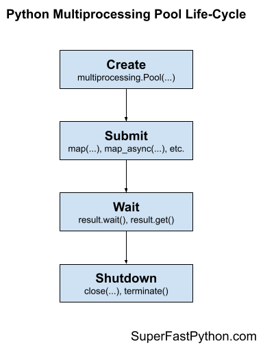

Multiprocessing Pool Life-Cycle in Python
The multiprocessing.Pool is a flexible and powerful process pool for executing ad hoc tasks in an asynchronous manner.
In this tutorial, you will discover how to get started using the multiprocessing.Pool quickly in Python.
Let's get started.
Multiprocessing Pool Life-Cycle
The multiprocessing.Pool provides a pool of generic worker processes.
It was designed to be easy and straightforward to use.
There are four main steps in the life-cycle of using the multiprocessing.Pool class, they are: create, submit, wait, and shutdown.
- 1. Create: Create the process pool by calling the constructor Pool().
- 2. Submit: Submit tasks synchronously or asynchronously.
- 2a. Submit Tasks Synchronously
- 2b. Submit Tasks Asynchronously
- 3. Wait: Wait and get results as tasks complete (optional).
- 3a. Wait on AsyncResult objects to Complete
- 3b. Wait on AsyncResult objects for Result
- 4. Shutdown: Shutdown the process pool by calling shutdown().
- 4a. Shutdown Automatically with the Context Manager
The following figure helps to picture the life-cycle of the multiprocessing.Pool class.

Let's take a closer look at each life-cycle step in turn.
Step 1. Create the Process Pool
First, a multiprocessing.Pool instance must be created.
When an instance of a multiprocessing.Pool is created it may be configured.
The process pool can be configured by specifying arguments to the multiprocessing.Pool class constructor.
The arguments to the constructor are as follows:
- processes: Maximum number of worker processes to use in the pool.
- initializer: Function executed after each worker process is created.
- initargs: Arguments to the worker process initialization function.
- maxtasksperchild: Limit the maximum number of tasks executed by each worker process.
- context: Configure the multiprocessing context such as the process start method.
Perhaps the most important argument is "processes" that specifies the number of worker child processes in the process pool.
By default the multiprocessing.Pool class constructor does not take any arguments.
For example:
...
# create a default process pool
pool = multiprocessing.Pool()This will create a process pool that will use a number of worker processes that matches the number of logical CPU cores in your system.
For example, if we had 4 physical CPU cores with hyperthreading, this would mean we would have 8 logical CPU cores and this would be the default number of workers in the process pool.
We can set the “processes” argument to specify the number of child processes to create and use as workers in the process pool.
For example:
...
# create a process pool with 4 workers
pool = multiprocessing.Pool(processes=4)It is a good idea to test your application in order to determine the number of worker processes that result in the best performance.
For example, for many computationally intensive tasks, you may achieve the best performance by setting the number of processes to be equal to the number of physical CPU cores (before hyperthreading), instead of the logical number of CPU cores (after hyperthreading).
You can learn more about how to configure the number of child worker processes in the tutorial:
You can learn more about how to configure the process pool more generally in the tutorial:
Next, let's look at how we might issue tasks to the process pool.
Step 2. Submit Tasks to the Process Pool
Once the multiprocessing.Pool has been created, you can submit tasks execution.
As discussed, there are two main approaches for submitting tasks to the process pool, they are:
- Issue tasks synchronously.
- Issue tasks asynchronously.
Let's take a closer look at each approach in turn.
Step 2a. Issue Tasks Synchronously
Issuing tasks synchronously means that the caller will block until the issued task or tasks have completed.
Blocking calls to the process pool include apply(), map(), and starmap().
- Use apply()
- Use map()
- Use starmap()
We can issue one-off tasks to the process pool using the apply() function.
The apply() function takes the name of the function to execute by a worker process. The call will block until the function is executed by a worker process, after which time it will return.
For example:
...
# issue a task to the process pool
pool.apply(task)The process pool provides a parallel version of the built-in map() function for issuing tasks.
For example:
...
# iterates return values from the issued tasks
for result in map(task, items):
# ...
The starmap() function is the same as the parallel version of the map() function, except that it allows each function call to take multiple arguments. Specifically, it takes an iterable where each item is an iterable of arguments for the target function.
For example:
...
# iterates return values from the issued tasks
for result in starmap(task, items):
# ...
Step 2b. Issue Tasks Asynchronously
Issuing tasks asynchronously to the process pool means that the caller will not block, allowing the caller to continue on with other work while the tasks are executing.
The non-blocking calls to issue tasks to the process pool return immediately and provide a hook or mechanism to check the status of the tasks and get the results later. The caller can issue tasks and carry on with the program.
Non-blocking calls to the process pool include apply_async(), map_async(), and starmap_async().
The imap() and imap_unordered() are interesting. They return immediately, so they are technically non-blocking calls. The iterable that is returned will yield return values as tasks are completed. This means traversing the iterable will block.
- Use apply_async()
- Use map_async()
- Use imap()
- Use imap_unordered()
- Use starmap_async()
The apply_async(), map_async(), and starmap_async() functions are asynchronous versions of the apply(), map(), and starmap() functions described above.
They all return an AsyncResult object immediately that provides a handle on the issued task or tasks.
For example:
...
# issue tasks to the process pool asynchronously
result = map_async(task, items)The imap() function takes the name of a target function and an iterable like the map() function.
The difference is that the imap() function is more lazy in two ways:
- imap() issues multiple tasks to the process pool one-by-one, instead of all at once like map().
- imap() returns an iterable that yields results one-by-one as tasks are completed, rather than one-by-one after all tasks have completed like map().
For example:
...
# iterates results as tasks are completed in order
for result in imap(task, items):
# ...
The imap_unordered() is the same as imap(), except that the returned iterable will yield return values in the order that tasks are completed (e.g. out of order).
For example:
...
# iterates results as tasks are completed, in the order they are completed
for result in imap_unordered(task, items):
# ...
You can learn more about how to issue tasks to the process pool in the tutorial:
Now that we know how to issue tasks to the process pool, let's take a closer look at waiting for tasks to complete or getting results.
Step 3. Wait for Tasks to Complete (Optional)
An AsyncResult object is returned when issuing tasks to multiprocessing.Pool the process pool asynchronously.
This can be achieved via any of the following methods on the process pool:
- Pool.apply_async() to issue one task.
- Pool.map_async() to issue multiple tasks.
- Pool.starmap_async() to issue multiple tasks that take multiple arguments.
A AsyncResult provides a handle on one or more issued tasks.
It allows the caller to check on the status of the issued tasks, to wait for the tasks to complete, and to get the results once tasks are completed.
We do not need to use the returned AsyncResult, such as if issued tasks do not return values and we are not concerned with when the tasks complete or whether they are completed successfully.
That is why this step in the life-cycle is optional.
Nevertheless, there are two main ways we can use an AsyncResult to wait, they are:
- Wait for issued tasks to complete.
- Wait for a result from issued tasks.
Let's take a closer look at each approach in turn.
3a. Wait on AsyncResult objects to Complete
We can wait for all tasks to complete via the AsyncResult.wait() function.
This will block until all issued tasks are completed.
For example:
...
# wait for issued task to complete
result.wait()If the tasks have already completed, then the wait() function will return immediately.
A “timeout” argument can be specified to set a limit in seconds for how long the caller is willing to wait.
If the timeout expires before the tasks are complete, the wait() function will return.
When using a timeout, the wait() function does not give an indication that it returned because tasks completed or because the timeout elapsed. Therefore, we can check if the tasks completed via the ready() function.
For example:
...
# wait for issued task to complete with a timeout
result.wait(timeout=10)
# check if the tasks are all done
if result.ready()
print('All Done')
...
else :
print('Not Done Yet')
...
3b. Wait on AsyncResult objects for Result
We can get the result of an issued task by calling the AsyncResult.get() function.
This will return the result of the specific function called to issue the task.
- apply_async(): Returns the return value of the target function.
- map_async(): Returns an iterable over the return values of the target function.
- starmap_async(): Returns an iterable over the return values of the target function.
For example:
...
# get the result of the task or tasks
value = result.get()If the issued tasks have not yet completed, then get() will block until the tasks are finished.
If an issued task raises an exception, the exception will be re-raised once the issued tasks are completed.
We may need to handle this case explicitly if we expect a task to raise an exception on failure.
A “timeout” argument can be specified. If the tasks are still running and do not complete within the specified number of seconds, a multiprocessing.TimeoutError is raised.
You can learn more about the AsyncResult object in the tutorial:
Next, let's look at how we might shutdown the process pool once we are finished with it.
Step 4. Shutdown the Process Pool
The multiprocessing.Pool can be closed once we have no further tasks to issue.
There are two ways to shutdown the process pool.
They are:
- Call Pool.close().
- Call Pool.terminate().
The close() function will return immediately and the pool will not take any further tasks.
For example:
...
# close the process pool
pool.close()Alternatively, we may want to forcefully terminate all child worker processes, regardless of whether they are executing tasks or not.
This can be achieved via the terminate() function.
For example:
...
# forcefully close all worker processes
pool.terminate()We may want to then wait for all tasks in the pool to finish.
This can be achieved by calling the join() function on the pool.
For example:
...
# wait for all issued tasks to complete
pool.join()You can learn more about shutting down the multiprocessing.Pool in the tutorial:
An alternate approach is to shutdown the process pool automatically with the context manager interface.
Step 4a. Multiprocessing Pool Context Manager
A context manager is an interface on Python objects for defining a new run context.
Python provides a context manager interface on the process pool.
This achieves a similar outcome to using a try-except-finally pattern, with less code.
Specifically, it is more like a try-finally pattern, where any exception handling must be added and occur within the code block itself.
For example:
...
# create and configure the process pool
with multiprocessing.Pool() as pool:
# issue tasks to the pool
# ...
# close the pool automatically
There is an important difference with the try-finally block.
If we look at the source code for the multiprocessing.Pool class, we can see that the __exit__() method calls the terminate() method on the process pool when exiting the context manager block.
This means that the pool is forcefully closed once the context manager block is exited. It ensures that the resources of the process pool are released before continuing on, but does not ensure that tasks that have already been issued are completed first.
You can learn more about the context manager interface for the multiprocessing.Pool in the tutorial:
Takeaways
You now know the life-cycle of the multiprocessing.Pool in Python.